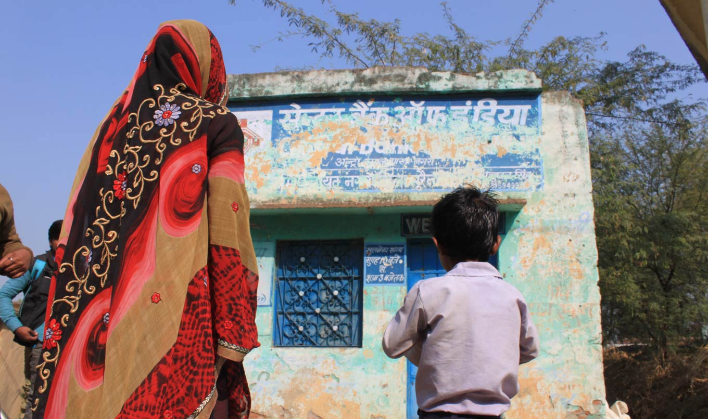

-

- Introduction
- Data entry
- A programme worth protecting
- Open, but not transparent
- The collaboration
- Next step: test and refine
- Transparency
-

-
Based on a project which was partly funded by UK aid. All photographs copyright Evidence for Policy Design.
If you have questions or comments, please contact us.
BCURE Case: Data transparency in India’s flagship social protection programme
by Evidence for Policy Design
September 2016
Development programmes, even the largest and most ambitious ones, are still implemented by individuals at the local level. Data can both enable these people to do their jobs and serve as a tool to help monitor them and hold them accountable – but only if the information is in a useable form. For a programme to be open in practice as well as in theory, it must not only produce data but also collate and package it for ready use by all stakeholders.
A collaboration between Harvard-based researchers and Indian policymakers has taken one of the world’s largest development databases and truly opened it up, revealing details of its implementation to those overseeing it and to other audiences – researchers, beneficiaries, and the public at large. The project offers lessons for governments looking to move from being passively “open” to being actively transparent.
Data entry
In a 2013 report, the ministry that administers the Mahatma Gandhi National Rural Employment Guarantee Act, or MGNREGA, called it "perhaps the largest and most ambitious social security and public works programme in the world." That year, it benefitted as many as 50 million households at a cost of nearly 5 billion dollars (330 billion rupees).
For its impoverished beneficiaries, the interface to this massive programme is often a one-room office not much bigger than a garden shed. There, the day-to-day administrative duties for the village, or panchayat, are up to the gram rogar sayak (GRS), working for 3800 rupees a month (about 50 dollars) in a contracted position with no opportunity for advancement up through the ranks of the civil service.
Reddy Subrahmanyam, who in 2013 was Joint Secretary at the Ministry of Rural Development (MoRD) which administers MGNREGA, describes what that meant for the GRS working in a typical panchayat office where "broadband was only a namesake." He says that during the daytime, bandwidth was taken up with other office activities. "What our field personnel used to do was work through the night, because they had to enter the data. During the daytime they would sleep in the office. Then after midnight they’d get their bandwidth, do their work, then leave at 3AM every day."
The result of the huge data collection effort is one of the largest development databases in the world: terabytes of data with more than 200,000 data points flowing in every day – which, when this case study begins in 2013, was all ostensibly accessible by the public via a website.
However, due to the structure of the site, little information was flowing back out. It was all there if you knew where to look, but almost no one did.
Now the Joint Secretary of Information Technology and Skills at MoRD, Dr Santhosh Mathew was formerly the Principal Secretary of Rural Development in Bihar and thus oversaw MGNREGA in one of India’s poorest states. He describes the problem:
"We still hadn’t surmounted the problem of addressing the needs of users of different kinds. There are users who are workers; there are users who are panchayat-level administrators; the users who are block, district, state, national administrators; there are academicians who need the data to come up with meaningful hypotheses and test them. And there are activists who want to make sure that the rights that have been given to them through this statute are actually available. All these are different constituencies, their information needs are separate, and we had nothing which would cater to this."
In 2013, Mathew, Subrahmanyam, and others at MoRD began a collaboration with researchers at Evidence for Policy Design (EPoD) based at Harvard Kennedy School on what would become the MGNREGA Public Data Portal. In 2014, the project expanded under the auspices of the Building Capacity to Use Research Evidence (BCURE) programme, funded by UK Aid. In a pilot project aiming to strengthen information systems for use by administrators, the team added dashboards for programme administrators and a micro-data access system, and trained developers at India’s National Informatics Centre. The work continues today under separate funding, with interventions to measure and optimize administrators’ use of MGNREGA data.
The end goal of this suite of activities is to create smart channels through which information can flow in and out of the database, making India's flagship development effort more efficient, transparent and effective.
A programme worth protecting
MGNREGA became law in 2005 and was implemented starting in 2006, covering the entire nation in 2008. It functions somewhat like the USA’s Works Progress Administration – which sought to relieve those impoverished by the Great Depression by employing them in infrastructure improvements – but with far greater reach, affecting the lives not of millions, but hundreds of millions. And while the Works Progress Administration was only a temporary measure, MGNREGA was intended to become part of India’s permanent policy landscape: a right to labour granted to citizens.
In guaranteeing every rural household 100 days’ annual employment at a minimum wage within 15 days of application, MGNREGA is admirably simple and egalitarian in concept. Anyone can apply for work, but the intended beneficiaries are unskilled rural citizens living in extreme poverty, and for them it serves as a lifeline.
"MGNREGA plays a big role in social protection for individuals whose link to the formal economy is tenuous," says Rohini Pande, Co-Director of EPoD and the BCURE-Harvard Team Lead on the project. "You need a system that is flexible, available in their village, and something that ideally they can turn to quite fast in times of need. The fact that the MGNREGA project is in your village, available near home, is particularly important for women who face mobility restrictions in much of India."
The programme shows a commitment to transparency, right down to a sign posted at every worksite displaying its budget and the going wage. But MGNREGA is also a locus of dispute on questions big and small, from whether it should exist at all, to whether some of its budget should be diverted toward skilling or unconditional cash transfers, down to the programme’s acronym (MGNREGS vs. NREGA vs. MGNREGA) and how to pronounce it. Many would prefer the government spend the money elsewhere, and many landlords and leaders in business would prefer to keep rural wages low. Their arguments tend to cite the uselessness of MGNREGA projects (click the button on the right to read more).
Such attacks rarely present supporting evidence, but other criticisms are well founded. MGNREGA has been plagued by leakages and delays in payment, and a World Bank study based on survey data showed that the programme often failed to supply labour to those who requested it, especially in the poorest states. In total in 2009–10, 45 percent of rural households wanted work on the scheme and, of those, only 56 percent got it.
Despite such problems, the evidence generally supports the Ministry’s claims that MGNREGA improves the lives of the rural poor. A major goal at the outset was to raise wages, and a 2013 study showed it did raise them by roughly 5.5 percent in districts where the programme was phased in earlier compared to where it arrived later. Observational studies reviewed in an article by Dilip Mookherjee of Boston University suggest that MGNREGA improves skillsets, decreases child labour and distress migration (moving away from drought or poverty rather than toward some advantage), and reduces poverty. contradicted claims of pointless hole-digging, suggesting that projects were actually useful, well executed and good for the economy. All strong evidence that MGNREGA is worth the expense.
Since this is a demand-driven programme – meaning the rural poor have to ask for work in order for it to be effective – aspects that decrease that demand will distort its impact. If a poor villager decides not to request work from MGNREGA because she thinks there will be a long wait before she gets paid, it might look like she does not ask because she does not need it. If this happens often enough, policymakers will underestimate the need for the programme.
Given this aspect of MGNREGA and its problems with leakage and payment delays, in 2013 the programme was still at risk of succumbing to its critics. Better monitoring was needed to both help identify implementation gaps and to reliably demonstrate the program's worth.
Open, but not transparent
In other contexts in rich and poor countries, transparency had proved an effective means – not only to improve programmes and prove their worth, but to provide administrators at different levels with a window onto their own programme. But was MGNREGA’s commitment to openness having the desired effect, or was it just opening the programme to attack?
Prof. Pande describes her team’s initial conversations with MoRD officials. "They were very open to recognizing the fact that, as any programme evolves, you will need to refine and tweak it. If you want to do current evaluations of MGNREGA and get information that you can feed back immediately to improve, how would you do that? In the context of that discussion it became clear that you first need the information to be available, before you can think of using it in a feedback loop."
To understand this, let’s return to that panchayat-level administrator, the gram rozgar sevak working into the wee hours inputting data on MGNREGA implementation. These data points flowed into vast datasets. The website providing access to them sprawled over thousands of pages and offered little guidance to the user. As is common across many government data portals around the world, the data tables available on the site had a deeply nested structure that made it difficult to construct datasets across multiple regions – the kind needed for even the most basic analyses – without resorting to time- and skill-intensive data scraping.
So in 2013, if a district-level manager were to approach the site for information to check on how MGNREGA was working in a certain block or village, she would probably not find the information. And if a GRS sought information on his own performance, he would almost certainly come away empty-handed – particularly if he were not highly educated, as was often the case. Meanwhile the servers were overtaxed and slow. As Santhosh Mathew puts it, the site "was impossible to use for anybody who did not know the website, whose life’s only work was not to look at that data."
The way to inform administrators from top to bottom would be to make the data accessible, searchable and comparable along relevant parameters – and, importantly, to present the information visually. (Click the button on the right for more.)
The collaboration
The proving ground in what would eventually become a successful collaboration between the Ministry of Rural Development and EPoD was to create the MGNREGA Public Data Portal, an interface designed to serve as a one-stop shop for over 50 indicators deemed crucial for evaluating MGNREGA.
Eric Dodge, Data Analytics Lead at EPoD, began working alongside National Informatics Centre (NIC) technicians within MoRD, often two to a computer because of stretched resources. Their collaboration was tentative at first, characterized by exploration and trial and error. But the similarities of their positions – NIC technicians were embedded within various government ministries including MoRD, much like Dodge was as a researcher – began to inspire a sense of camaraderie. After three weeks navigating political obstacles and several late nights solving technical problems, the group was able to pass basic pieces of data back and forth between the front and back end of the application. They knew that the partnership and the portal could be successful.
Meanwhile, Charity Troyer Moore, Director of EPoD India, managed the relationships with senior officials at MoRD. "Especially when we were starting, I made sure I was in there every few days, putting a face to the project and also listening to hear what issues they were talking about in the office. They know so much more than we do about the programme. They know what the challenges are. So spending as much time with them as possible was a very good thing as we tried to understand how to support them better."
Lessons for policy-research engagement
1
2
3
4
As the project progressed, the EPoD team came to recognize the factors that had caused one of the biggest development datasets to be effectively buried. Predictably, some related to capacity (overstrained servers, few computers), and were hence unavoidable. But others mirrored the website architecture: obstacles that could be overcome with some vision and organizational change. EPoD researchers came up with a list of takeaways that they later disseminated in blog posts and opinion pieces.
With support from DFID India, the MGNREGA Public Data Portal went live in March 2014. For the first time, anyone who wanted to know how MGNREGA was working could log onto a website and, with a few clicks, ask the questions of the data to which they needed answers. Later that year support from BCURE, funded by UK Aid, allowed the team to conduct a pilot project to extend the software to more directly enable users to access and utilize the data. It would make the Portal more suited to the needs of lower-level administrators through a companion set of interactive data visualizations, the Report Dashboards.
These dashboards, in turn, would expand the capacity of these administrators to perform their jobs informed by detailed, accurate data – the administration of which would be delivered into Ministry hands. "One of the key things we wanted was, not to build a system outside the existing government system, but to have something fully integrated that can be maintained by the individuals there," Pande says. "So it was critical that we were able bring technical advice into the ministry: that’s what the BCURE funding allowed us to do."
In August 2014, the EPoD team launched these new features to an audience of a few MoRD officials in a room and, via videoconference, state-level administrators from each of about twenty states. They gave a walkthrough of how to create reports, and received polite applause.
Given that modest christening (and the fact that bureaucrats are often set in their ways) the researchers wondered if the Portal would see much use. But in the year following the launch, the Reports Dashboard alone received 150,000 views by over 100,000 users. Meanwhile, NIC technicians, convinced of the project’s worth, maintained and updated the Portal, making it more robust and versatile.
Next step: test and refine
It appears that the collaboration has produced a useful product in terms of its features. Subrahmanyam describes how the Portal can benefit the gram rozgar sevak.
"He can track his own performance on a timescale and also his relative performance vis-à-vis other geographical units – other villages – across a number of parameters: provision of work, number of days of employment provided, delays in payment, quantum of work done, type of work done. All of these things can be monitored with the dashboard. He can always see how the unit above him is doing and how the unit below him is doing – other villages, other blocks, the district average and the national average. And the people above him can watch his performance."
But are the administrators at the panchayat, block, and district level using their new tools? All those website hits mean little if the policy actors are not using the information to improve MGNREGA.
"Data needs a narrative, and PDF documents and spreadsheets don’t yet tell a good enough story."
Ben Worthy of Birkbeck College
The next step in this policy-research engagement is to test whether visualized, easy-to-understand presentations of data can increase data usage by officials relative to plain-text versions of the same information. But in the meantime, the Ministry of Rural Development are using the Portal for their own purposes, finding new uses for data they had already been collecting. Reddy Subrahmanyam says,
"From the data points we’re trying to identify workers who have depended on this wage employment for a long period, and try and see whether we can upgrade them from an unskilled category to a skilled category. Once they become a skilled worker, then they don’t need to depend on the government."
Transparency: should citizens or government take the lead?
When asked why he and his team put so much effort into making MGNREGA’s data open and accessible, Santhosh Mathew seems surprised by the question. "It’s a requirement of the Act!" he says.
Indeed, the legislation behind MGNREGA calls for transparency, and such stipulations are a typical feature in India’s policy landscape. But how much impact do they have? India’s most conspicuous transparency guarantee, the Right to Information Act (RTI), is easily the most-used freedom of information law in the world with 4.5 to 5 million information requests filed every year. And it is strong, at least on paper: a 2013 ranking of the quality of freedom of information legislation across countries (based on scope, procedures, promotional measures, etc.) placed India in second place, worldwide. However, another index that considers a number of real-world indicators, the Open Data Barometer, puts India halfway down the list at number 39 of 83 countries ranked. Here, India’s position is dragged down by the low impact the RTI and other open data initiatives have had in political, economic, and social terms.
It may be that across the Indian government, ministries are fulfilling the letter of the law, but not in a way that can create change. This is a challenge even for countries at the top of the Open Data Barometer ranking. The UK, for instance, made raw data on city council spending available online, but the site attracted a mere 200 hits per month. As Ben Worthy of Birkbeck College said in a piece reporting the disappointing numbers, "Data needs a narrative, and PDF documents and spreadsheets don’t yet tell a good enough story."
The good news is that online portals can make data tell its stories automatically. And they are possible in countries with limited resources. The MGNREGA project required catalysts – EPoD researchers and funding from the BCURE programme – but as the technology becomes cheaper and better, more governments will be able to actively publish administrative data in a useable format.
Calls for transparency are not enough. The next step is for laws to go beyond simply giving citizens the right to make requests, and beyond requiring ministries to release their data – they should require an add-on to make sure the data is useable. The more researchers work with governments to determine what such an add-on entails, the more durable and scalable it will be, and the more open data will lead to open societies. ■
Text by V. McIntyre. Design by Angela Ambroz.